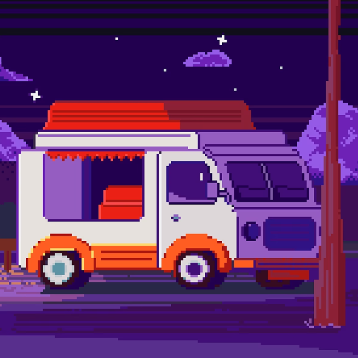

Фритрек и нулевой спринт: Подготовка к работе
<expectations>
Это было самое начало пути. На этом этапе важно было проникнуться основами и настроиться на учёбу. И, возможно, подумать, как новые знания могут повлиять на ваше будущее.
Планы, ожидания, вопросы. А вдруг не моё, вдруг не получится? Однако было принято решение наконец попробовать то, чем хотел заниматься еще с детства.
1 спринт: Я — чистый лист
<doubts>
На первых этапах мы работали со страхами и сомнениями, которые часто испытывают новички. Один из них — страх перед чистым листом. Это, конечно же, намного сложнее, чем боязнь куска бумаги. Часто за этим ощущением скрываются более глубокие вопросы: с чего начать? а вдруг будет слишком сложно? что, если я не справлюсь?
Но главное, а что, если спустя почти два года обучения я пойму — это не совсем то, что мне нужно? Но, с другой стороны, самое худшее сожаление — это сожаление о несодеянном.
1 спринт: А если не получится?
<insights>
Первый проект — позади! Но это всё ещё самое начало пути. Радость могла быстро померкнуть и смениться ожиданием провала. Или вы, наоборот, могли вдохновиться успехами и поверить в себя.
Становилось по-настоящему увлекательно находить параллели между разработкой (и версткой) и профессиональным (и не только) опытом из других областей. Иногда даже было забавно — вроде бы новая идея, а вроде бы и много лет знакомая... Только раньше не обращал внимания или смотрел под совершенно другим углом.
2 спринт: Погоня за идеалом
<endeavours>
На этом этапе вы уже достаточно разбирались в основах вёрстки, чтобы понять, как много ещё впереди. Вы могли попытаться погнаться за идеалом и понять, что он недостижим. А, может, вы вовсе и не подвержены перфекционизму и вместо того, чтобы сделать идеально, старались просто сделать.
Возникало желание хвататься за все сразу, всё попробовать, всё пощупать, всё изучить. И все же довольно скоро стало очевидно, что последовательность и методичность — лучшие друзья на пути изучения чего угодно.
Когда более глубокое погружение в тему даёт системность и уверенность от ощущения «сложенного пазла», начинаешь чувствовать то самое удовлетворение от процесса, которое порой даже важнее результата — решенной текущей задачи.
2 спринт: О тех, кто рядом
<unity>
Всё это время вы были не одиноки (хотя, возможно, иногда и чувствовали, что одни против целого мира). Вас окружали одногруппники, команда сопровождения и просто близкие люди, которым можно пожаловаться, если очередной макет просто так не поддавался. Осваивать что-то новое легче, когда рядом есть единомышленники, не правда ли?
Было ощущение, что становишься больше, когда общий поток сознания группы штурмовал общие задачи. Моменты вдохновения и озарений. Осознание, что любая трудность может быть решена совместными усилиями.
3 спринт: Обходные стратегии
<ingenuity>
На этом курсе вы постоянно решали разные задачи. В какой-то момент вам могло показаться, что решения просто иссякли. Значит, пришло время посмотреть на задачу под другим углом.
Учеба на курсе как регулярная зарядка для мозгов. Необходимость гибко мыслить, подбирать и перебирать все новые варианты подходов и возможных решений уже выходила за пределы тренажера и проектных работ. Казалось, что даже повседневные дела даются с куда меньшими усилиями и сопротивлением.
3 спринт: Когда опускаются руки
<return to discipline>
Во время учёбы часто возникает чувство, когда не знаешь, за что хвататься. Вроде и проектную пора сдавать, и задачи хочется порешать, и в теории получше разобраться, и жизнь не забыть пожить. В такие моменты очень нужна концентрация. Вспомните, откуда вы её черпали.
Когда казалось, что времени не на что не хватает, помогли воспоминания об университетских годах. Тогда выручала хорошая дисциплина — четкая организация времени и личного пространства. Освободившись от нескольких «пожирателей времени», сделав генеральную уборку в квартире, уделив больше времени своим личным потребностям и разобравшись с откладываемыми уже несколько месяцев делами, я вдруг понял, что в действительности не так уж и важно, 24 часа в сутках, 25 или все 30.
«Сейчас я здесь»
<experience>
Сейчас вы уже очень много знаете о вёрстке. Но это только начало. Во-первых, впереди ещё много материала про «красотищу». Во-вторых, с окончанием курса учёба не заканчивается. Вёрстка — это целый мир. И этот мир постоянно меняется. Познать его полностью не получится, но это тот случай, когда важен сам процесс познания. Ведь часто путь — и есть результат.
Все постепенно устаканивается и встает на места. И даже несмотря на то, что круг вопросов продолжает расширятся ускоряющимся темпами, уверенность в своих силах тоже продолжает расти. Ведь первый шаг — всегда самый трудный.
Главное при этом, не забывать про отдых :)